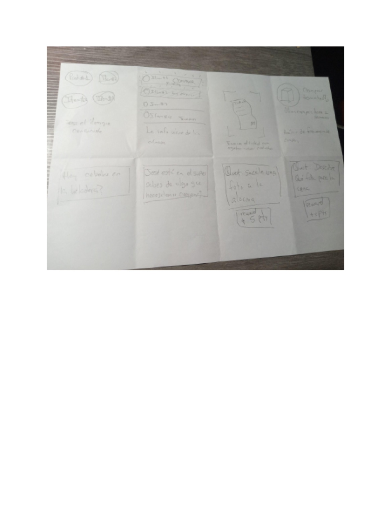
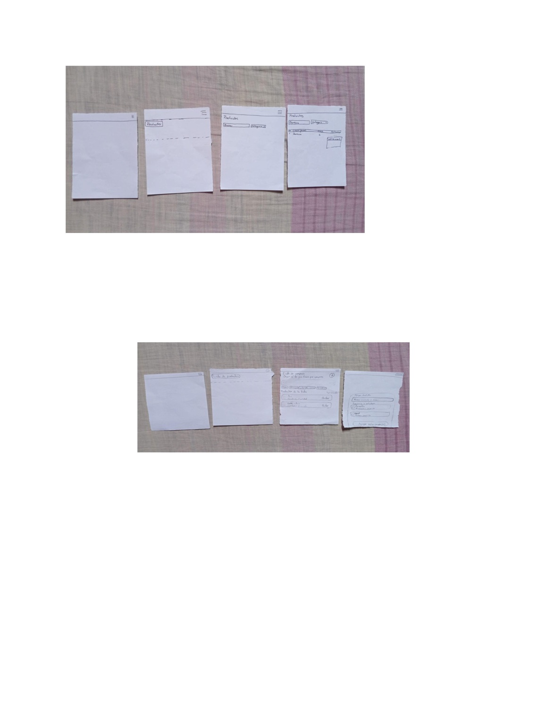

Revisión física
55/70
revisan heladera, despensa o armarios antes de salir.
Una experiencia compartida para saber qué hay, qué se está acabando y qué hace falta comprar, sin depender de la memoria de una sola persona.
En muchos hogares, el inventario se reconstruye mirando estantes y preguntando por mensajes. Cuando alguien olvida anotar un faltante, la compra llega tarde o se duplica.
Queríamos entender cómo los hogares deciden qué comprar, cómo saben qué queda y en qué momento la coordinación deja de funcionar.
Abrir informe de investigación (PDF) ↗revisan heladera, despensa o armarios antes de salir.
dicen que el método falla porque olvidan anotar en el momento.
hicieron una compra de urgencia por un olvido en los últimos meses.
Muestreo por conveniencia y difusión en redes/contactos.
Lo que más cansancio me genera es hacer la lista y tener que salir a comprar de urgencia cuando me olvidé de algo.
Entrevistada D · encargada principal de compras en un hogar de cuatro personas
En cuatro de cinco entrevistas, las personas describieron listas o registros que pronto quedaban incompletos u obsoletos.
Los relatos muestran diferencias en frecuencia e impacto. La encuesta fue de conveniencia; sus resultados describen esta muestra, no a todos los hogares.
No faltan canales para armar listas. La falla aparece cuando consumir un producto no se convierte en una actualización que todos puedan ver.
Las familias ya tienen formas de registrar lo que falta; lo que falla es que el registro depende de que alguien recuerde actualizarlo justo en el momento.
Síntesis de entrevistas y encuesta · 39/70 olvidan anotar; 4/5 describen registros que pierden vigencia.
El coordinador del hogar necesita confiar en la información de lo que falta porque los métodos actuales solo funcionan mientras todos recuerdan actualizarlos, dejando la verificación sobre unas pocas personas.
…mantener confiable la información sobre lo que falta sin depender constantemente de la memoria de una sola persona?
Representación anonimizada, anclada en el relato de una entrevistada; no es un promedio de todas las personas.
Convive con su padre y dos hermanos.
Revisa alacena y heladera, arma una lista y coordina por WhatsApp.
Evitar olvidos, compras dobles y desperdicio.
Un faltante tardío interrumpe otras tareas.
Segundo perfil descrito en los requisitos; organiza compras grandes y busca ajustar cantidades al consumo real.
Ejecuta principalmente las compras del hogar.
Planifica con lista, presupuesto y conocimiento del recorrido.
Comprar cantidades adecuadas y ahorrar tiempo.
La incertidumbre conduce a comprar “por las dudas”.
Revisa heladera y alacena, consulta a la familia y arma la lista.
Productos agotados ya no están a la vista; revisar toma tiempo.
Recorre el supermercado y escribe a otras personas para confirmar faltantes.
Las respuestas pueden llegar tarde y generan compras “por las dudas”.
Guarda y consume; alguien nota que falta un producto cuando ya lo necesita.
El cambio no se registra y reaparece como viaje urgente o duplicado.
Síntesis del mapa de viaje documentado en Empatizar y Definir.
| Evidencia | Insight | Necesidad | Requisito |
|---|---|---|---|
| 39/70 olvidan anotar; 4/5 registros quedan obsoletos | El dato se pierde en el punto de consumo. | Registrar el faltante cuando ocurre. | RF1 · Marcar como agotado o por agotarse. |
| La información de stock se verifica de nuevo antes de comprar. | La lista no informa si el estado sigue vigente. | Confiar en el último cambio registrado. | RF3–RF4 · Conservar estado y última actualización. |
| El inventario se concentra en 1–2 personas en 5/5 hogares entrevistados. | La disciplina colectiva no se reparte. | Permitir contribuciones del hogar. | RF5–RF6 · Reflejar cambios para integrantes autorizados. |
Los requisitos funcionales corresponden al documento de definición del equipo. El prototipo representa una propuesta; no demuestra todavía sincronización real entre integrantes.
Abrir trazabilidad completa de insights y requisitos ↗En la lluvia de ideas y los Crazy 8s se exploraron formas de volver visibles los faltantes, distribuir el registro y conectar el inventario con la compra. La dirección elegida reúne ambas tareas en una sola experiencia: saber dónde está cada producto y compartir una lista que cambia con el estado del hogar.
Organizar productos por espacios físicos: alacena, heladera, congelador y otros.
Dar una acción rápida para marcar que queda poco o que un producto se agotó.
Reunir los pendientes en una lista y facilitar su seguimiento durante la compra.

La hoja muestra iteraciones rápidas del equipo: estados de producto, listas y formas de mostrar información en el hogar. La dirección final conectó esas piezas en un inventario por espacios y una lista compartida.
Ver documento completo de ideación ↗Reduce la reconstrucción manual del inventario y acerca el aviso a la acción que lo origina.
Cada etapa agregó estructura y claridad a tareas que el equipo había definido desde la investigación. El último prototipo reúne 28 estados de seis áreas de la aplicación.
Explorar wireframes interactivos (28 pantallas) ↗Una primera representación para recorrer las tareas principales antes de digitalizar.
Se añadieron estados vacíos, confirmaciones, validaciones y revisión antes de ingresar una compra.
El prototipo organiza 28 pantallas y estados en seis áreas principales.

Las pantallas de papel permitieron recorrer siete tareas y encontrar faltantes de flujo antes de formalizar los wireframes.
Ver evaluación del prototipo en papel ↗La guía de wireframes prioriza nombres explícitos, controles reconocibles y acciones frecuentes accesibles en pantallas móviles.
Faltaba revisar la compraSe incorporó un paso con cantidades editables antes de actualizar el inventario.
Había acciones sin confirmaciónSe añadieron confirmaciones al quitar productos y al marcar un artículo como agotado.
Faltaba feedbackSe agregó validación de campo obligatorio y un estado de éxito al registrar la compra.
| Tarea | Problema observado | Cambio en wireframes |
|---|---|---|
| Registrar faltantes | “Consumí” no explicaba si bajaba la cantidad o agotaba el producto (sev. 2); guardar sin nombre no mostraba error (sev. 3). | Controles −/+ y acción “Agotado” con confirmación; validación de campo obligatorio. |
| Preparar lista | No se veía qué categoría estaba seleccionada (sev. 2); quitar un artículo no pedía confirmación (sev. 3). | Estado activo relleno y diálogo para confirmar que se quite el producto. |
| Completar compra | No existía una pantalla de revisión antes de actualizar el inventario (sev. 4). | Se agregó revisión con cantidades editables y confirmación de compra registrada. |
| Gestionar espacios | Faltaba el formulario para crear un espacio (sev. 3). | Se añadieron modales para crear, editar y eliminar espacios. |
| Buscar y filtrar | La lupa no se incorporó; el rótulo por pasillo quedó parcial porque varía según el supermercado. | Se mantuvo el placeholder del buscador y se agruparon productos por categoría durante la compra. |
Severidad según el registro de evaluación: 1 cosmético, 2 menor, 3 mayor y 4 bloqueante. El informe completo documenta 12 problemas y el estado de cada cambio.
El prototipo en papel se revisó con recorrido cognitivo y evaluación heurística. La revisión permitió corregir caminos incompletos antes de ampliar la interacción.
Abrir informe de evaluación ↗evaluadores de otro equipo
recorridas paso a paso
problemas documentados
Los 4 revisores evaluaron el prototipo; esto es una evaluación experta, no una prueba con usuarios del perfil.
En los materiales revisados encontramos el recorrido cognitivo y la evaluación heurística del prototipo en papel, además del registro de cambios. No encontramos resultados documentados de una prueba de usabilidad con wireframes. Por eso no los presentamos como si fueran una prueba con participantes.
Siguiente paso: ejecutar tareas del flujo con personas del perfil y registrar dónde dudan, qué completan y qué deben rehacer.
Comprobar si el hogar puede registrar un faltante y preparar una compra sin volver a reconstruir el inventario manualmente.
Al menos 5 personas que participen en las compras o gestión del hogar; sin compañeros del curso ni personas de pruebas anteriores. Sin registrar nombres en el portafolio.
Mismas tareas para todos, pensamiento en voz alta, facilitador y observador, consentimiento informado.
Completitud autónoma / con ayuda / no completada, tiempo, errores, SEQ (1–7) por tarea y SUS al final.
“Notaste que queda poco aceite. Avisá a las personas de tu hogar para que sepan que hay que reponerlo.”
“Estás por salir a comprar. Revisá qué falta y agregá un producto que el hogar necesita.”
“Ya estás en el supermercado. Comprá los artículos pendientes y revisá lo que trajiste antes de guardarlo.”
Se consolidarán los problemas por participantes afectados y severidad (1 cosmético–4 bloqueante). Los hallazgos 3–4 se corregirán en la demo o se justificará la decisión, mostrando antes y después.
Los documentos originales, las fotos de ideación y el prototipo quedan incluidos junto al portafolio. Abrí cada material para consultar el proceso completo y sus anexos.
Métodos, muestra, hallazgos, persona, mapa de viaje, POV, HMW e historias.
Abrir informe PDF ↗ DefiniciónPerfiles, preguntas de diseño e integración de requisitos con evidencia.
Abrir documento PDF ↗ IdeaciónExploraciones del equipo antes de definir el rumbo del producto.
Abrir evidencia PDF ↗ PrototipadoRegistro de problemas, severidad, antes y después de las correcciones.
Abrir registro PDF ↗ EvaluaciónRecorrido cognitivo, evaluación heurística, hallazgos y recomendaciones.
Abrir informe PDF ↗ Prototipo navegableVersión móvil en escala de grises con flujos de inventario, espacios y compra.
Abrir wireframes ↗La próxima versión sumará tareas funcionales de punta a punta, una prueba con personas del perfil, los cambios derivados de esa prueba y una reflexión final.